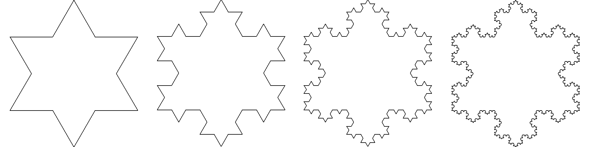

3.9 Série géométrique et applications
Soit \(r\in \mathbb{R}\), et, pour tout \(n\geqslant 1\), définissons la suite
\[
S_n:= 1+r+r^2+r^3+\cdots +r^{n-1}+r^n\,.
\]
Dans la limite \(n\to \infty\),
\[
\lim_{n\to \infty} S_n=
\begin{cases}
+\infty & \text{ si }r\geqslant 1\,,\\
\frac{1}{1-r} & \text{ si }|r|\lt 1\,,\\
\text{n'existe pas} &\text{ si }r\leqslant -1\,.
\end{cases}
\]
Dans le cas \(|r|\lt 1\), on écrit souvent le résultat sous la forme
\[ \boxed{1+r+r^2+r^3+\dots=\frac{1}{1-r}}
\]
La somme infinie, dans le côté gauche, s'appelle la
série géométrique. (On étudiera les séries dans un chapitre
ultérieur.)
Preuve:
Rappelons que si \(r=1\), alors
\(S_n= n+1\), ce qui implique \(S_n\to+\infty\).
Ensuite, si \(r\neq 1\), on a vu que
\[
S_n=\frac{1-r^{n+1}}{1-r}\,.
\]
On peut alors considérer séparément les cas:
- \(r\gt 1\). Dans ce cas, on écrit plutôt
\[
S_n=\frac{r^{n+1}-1}{r-1}\,.
\]
Comme \(r^{n+1}\to \infty\), on a \(S_n\to +\infty\).
- \(-1\lt r\lt 1\).
Dans ce cas. \(|r^n|=|r|^n\to 0\) car \(|r|\lt 1\),
et donc \(S_n\to \frac{1}{1-r}\).
- \(r= -1\).
Dans ce cas, \(S_n=\frac12(1-(-1)^{n+1})\), et donc ne converge pas.
- \(r\lt -1\). Dans ce cas, \(r^n\) n'a pas de limite lorsque
\(n\to\infty\) (oscille).
\[\begin{aligned}
1+\tfrac12+\tfrac14+\tfrac18+\tfrac{1}{16}+\dots&=
1+\tfrac12+(\tfrac12)^2+(\tfrac12)^3+(\tfrac12)^4+\cdots\\
&=\tfrac{1}{1-\tfrac12}=2\,.
\end{aligned}\]
Calculons l'aire du Flocon de von Koch (Suédois, 1870-1924).
(Pour plus de détails, voir la vidéo ci-dessus.)

On part d'un triangle d'aire \(A_0=1\), puis à chaque étape \(n\geqslant 1\),
on rajoute le triangle-tiers sur chaque côté.
À l'étape \(n\), l'aire du triangle rajouté vaut
\[ a_n=(1/9)^n\,, \]
et le nombre de triangles rajoutés vaut
\[ \sigma_n=3\cdot 4^{n-1}\,. \]
L'aire après la \(n\)ème étape vaut donc
\[
A_n=A_{n-1}+\sigma_na_n\,.
\]
En itérant cette expression, on obtient
\[\begin{aligned}
A_n&=1+\sigma_1a_1+\sigma_2a_2+\cdots+\sigma_n a_n \\
&=1+\frac{1}{3}+\frac13\frac{4}{9}+\frac13\frac{4^2}{9^2}+
\frac13\frac{4^3}{9^3}+\dots\frac13\frac{4^{n-1}}{9^{n-1}}\\
&=1+\frac13
\Bigl\{
1+\frac{4}{9}+\frac{4^2}{9^2}+
\frac{4^3}{9^3}+\dots\frac{4^{n-1}}{9^{n-1}}
\Bigr\}
\end{aligned}\]
On reconnaît l'apparition d'une série géométrique de raison \(r=\frac49\lt 1\), et
donc
\[ \lim_{n\to \infty} A_n=1+\frac13\frac{1}{1-\frac49}=1+\frac13\frac95=\frac85\,.
\]
Application: existence du nombre \(e\)
Dans cette section, on étudie la suite
\[ e_n:= \Bigl(1+\frac1n\Bigr)^n\,.
\]
Dans la limite \(n\to \infty\), \(e_n\) mène à une
indétermination de la forme ''\(1^\infty\)'', et il n'est pas clair, a priori,
de comment se comporte vraiment \(e_n\).
Donnons deux arguments légitimes,
mais faux, concernant le comportement
de \(e_n\) dans la limite \(n\to \infty\).
-
On peut penser, que lorsque \(n\) est grand,
le terme \(\frac1n\) devient négligeable, et donc écrire
\[e_n\simeq (1+0)^n=1\,,\]
ce qui mène à penser que la limite de \(e_n\) est
égale à \(1\).
-
En se rappelant que même s'il est petit, le terme \(\varepsilon=\frac1n\) est
toujours strictement positif, ce qui mène à penser, puisque \(1+\varepsilon>1\),
que
\[e_n\simeq (1+\varepsilon)^n\to \infty\,.\]
⚡
Soit \((e_n)_{n\geqslant 1}\) la suite définie ci-dessus.
Alors
- \((e_n)\) est strictement croissante,
- \((e_n)\) est bornée: \(2\lt e_n\lt 3\) pour tout \(n\geqslant 1\).
Par conséquent, il existe
\(e\in [2,3]\) tel que
\[\lim_{n\to \infty} e_n=e\,.\]
GGB: g_suites_unplusunsurnalapuissancen_pour_video.ggb
Preuve:
Pour commencer, utilisons la formule du binôme pour écrire \(e_n\) sous une
forme qui permette de mieux étudier sa dépendance en \(n\):
\[\begin{aligned} e_n= \Bigl(1+\frac1n\Bigr)^n
&=1+\sum_{k=1}^n\binom{n}{k}1^{n-k}(\tfrac1n)^k\\
&=1+\sum_{k=1}^n\frac{n!}{k!(n-k)!}(\tfrac1n)^k\\
&=1+\sum_{k=1}^n\frac{1}{k!}\frac{n(n-1)(n-2)\cdots(n-k+1)}{n\cdot n\cdots n}\\
&=1+\sum_{k=1}^n\frac{1}{k!}
\bigl(1-\tfrac1n\bigr)\cdots
\bigl(1-\tfrac{k-1}{n}\bigr)
\end{aligned}\]
On utilise deux fois cette expression.
- Affirmation:\((e_n)\) est croissante.
En utilisant l'expression précédente, pour \(n+1\)
\[\begin{aligned}
e_{n+1}
&=1+\sum_{k=1}^{n+1}\frac{1}{k!}
\bigl(1-\underbrace{\tfrac1{n+1}}_{\lt \frac1n}\bigr)\cdots
\bigl(1-\underbrace{\tfrac{k-1}{n+1}}_{\lt \frac{k-1}{n}}\bigr)\\
&\gt 1+\sum_{k=1}^{n+1}\frac{1}{k!}
\bigl(1-\tfrac1{n}\bigr)\cdots
\bigl(1-\tfrac{k-1}{n}\bigr)\\
&= 1+\sum_{k=1}^{n}\frac{1}{k!}
\bigl(1-\tfrac1{n}\bigr)\cdots
\bigl(1-\tfrac{k-1}{n}\bigr)=e_n\,.
\end{aligned}\]
Dans l'avant-dernière égalité, on a utilisé le fait que si \(k=n+1\), alors
\(1-\frac{k-1}{n}=0\).
Comme \(e_n\) est strictement croissante, on a en particulier que \(e_n> e_1=2\).
- Affirmation:\((e_n)\) est majorée par \(M=3\).
En utilisant encore une fois l'expression ci-dessus,
\[\begin{aligned} e_n
&=1+\sum_{k=1}^n\frac{1}{k!}
\bigl(\underbrace{1-\tfrac1n}_{\lt 1}\bigr)\cdots
\bigl(\underbrace{1-\tfrac{k-1}{n}}_{\lt 1}\bigr)\\
&\lt 1+\sum_{k=1}^n\frac{1}{k!}\\
&=1+\frac{1}{1!}+\sum_{k=2}^n\frac{1}{k!}
\end{aligned}\]
Remarquons maintenant que pour tout \(k\geqslant 2\),
\[ k!=
\underbrace{k}_{\geqslant 2}\cdot
\underbrace{(k-1)}_{\geqslant 2}\cdots
\underbrace{3}_{\geqslant 2}\cdot 2\cdot 1\geqslant 2^{k-1}\,,
\]
et donc
\[ e_n\lt
1+1+\sum_{k=2}^n\frac{1}{2^{k-1}}<
1+\sum_{k=0}^\infty\frac{1}{2^{j}}\lt 1+\frac{1}{1-\frac12}=3\,.
\]
On a donc montré que \((e_n)\) est croissante et majorée, donc elle converge.
Puisque \(2\leqslant e_n\leqslant 3\) pour tout \(n\), sa limite appartient aussi à cet
intervalle.